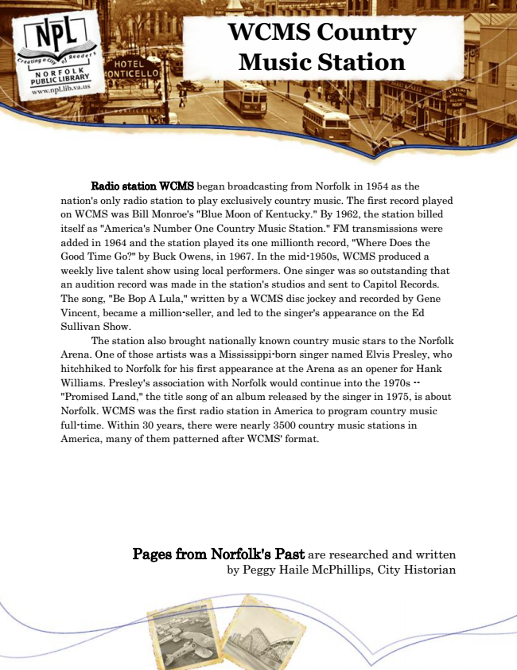

WCMS Country Music Station
Radio station WCMS began broadcasting from Norfolk in 1954 as the nation's only radio station to play exclusively country music. The first record played on WCMS was Bill Monroe's "Blue Moon of Kentucky." By 1962, the station billed itself as "America's Number One Country Music Station." FM transmissions were added in 1964 and the station played its one millionth record, "Where Does the Good Time Go?" by Buck Owens, in 1967. In the mid-1950s, WCMS produced a weekly live talent show using local performers. One singer was so outstanding that an audition record was made in the station's studios and sent to Capitol Records. The song, "Be Bop A Lula," written by a WCMS disc jockey and recorded by Gene Vincent, became a million-seller, and led to the singer's appearance on the Ed Sullivan Show.
The station also brought nationally known country music stars to the Norfolk Arena. One of those artists was a Mississippi-born singer named Elvis Presley, who hitchhiked to Norfolk for his first appearance at the Arena as an opener for Hank Williams. Presley's association with Norfolk would continue into the 1970s -- "Promised Land," the title song of an album released by the singer in 1975, is about Norfolk. WCMS was the first radio station in America to program country music full-time. Within 30 years, there were nearly 3500 country music stations in America, many of them patterned after WCMS' format.
Pages from Norfolk's Past are researched and written by Peggy Haile McPhillips, City Historian